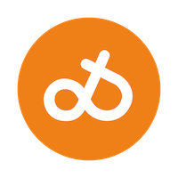
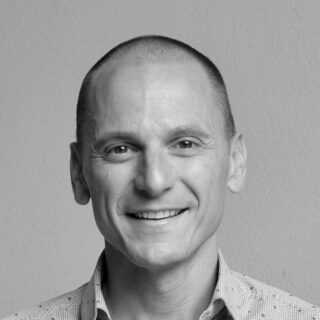

DQSIS Dimitrios KiousisWelcome
For the past decade I have built software for clinical personnel and patients. My journey started with a PhD in Electrical Engineering, with a thesis in computational biomechanics, ran through aerospace engineering, and brought me to where I have been ever since: the intersection of software and healthcare.

Work
Most recently I was Development Manager at Omda, leading development of Electronic Health Record systems for maternity and fertility care, used daily by clinical personnel across the Nordics. Before that I led the Cloud Integrations team at Glooko as Product Owner, worked as Innovation Manager at Västra Götalandsregionen with Sahlgrenska University Hospital, and spent more than five years at Mentice building simulation software for endovascular surgery.
I care about how teams work, how software gets built, and how it serves the people who use it.
Experiments · Current
A personal PWA workout tracker — log sets on my phone at the gym, synced everywhere.
Aug 2026A commonplace book of quotes, anecdotes, and passages I have come upon — each with a note.
Jul 2026Live wind-based ranking of ten favourite beaches around Marmari–Karystia.
Oct 2026Arch + Hyprland, tuned endlessly — themes, a home-made plugin, and the tweaks I keep making.
Nov 2026My fork of the terminal Tetris that always picks the worst piece — now with classic colours, a ghost piece and a fair mode.
Experiments · Previous
A five-day office wardrobe built from one small kit — shirt and trouser doing most of the work.
Aug 2026An interactive timeline from Bronze Age Mycenae to the modern diaspora, based on Roderick Beaton's The Greeks.
Jun 2026Bracket tracker for the 2026 FIFA World Cup knockout stage, kept live through the final.
Jun 2026A personal photo challenge across Greece — one prompt per day.
Jun 2026Five decades of the iconic cushion-cased diver, from 1976 to my SRPE93K1.
Life
I have a beautiful wife and two incredible daughters.
Most of my free time goes to endurance sports. I started swimming when I was six and have not stopped since. I am also a cyclist and a runner:
Lately I have (re)discovered strength training, four sessions a week.
Beyond that: electric guitar, 3D printing, endlessly tweaking my Linux desktop, and reading most evenings (every book since 2006). My favourite possession is my Honda Monkey, bought in March 2022.
Connect
Find me on LinkedIn for more on my career, see what else I am building on GitHub, or send me a message below.